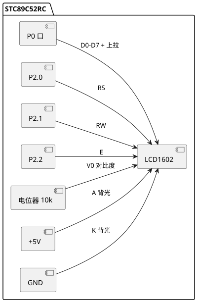

实验7 LCD1602显示
LCD1602 是 16×2 字符液晶模块 (Character Liquid Crystal Display)，可显示 2 行每行 16 个字符。本实验掌握 LCD1602 的指令表、读写时序、初始化流程，实现字符、字符串与自定义字符显示。完整工程源码见 /code/stc89c52rc/07-lcd1602/。
一、实验目的
- 掌握 LCD1602 的引脚功能与硬件接口。
- 理解 LCD1602 的指令集与读写时序。
- 掌握 LCD1602 初始化流程与字符/字符串显示。
- 掌握 CGRAM 自定义字符的创建与显示。
二、知识点
- 引脚：LCD1602 共 16 脚，含 RS (寄存器选择)、RW (读写)、E (使能)、D0-D7 (数据)、V0 (对比度)、A/K (背光)。
- RS/RW 作用：RS=0 选指令寄存器，RS=1 选数据寄存器；RW=0 写，RW=1 读。
- 写时序：RS/RW 设好 → D0-D7 送数据 → E 拉高 → 延时 → E 拉低 (下降沿锁存数据)。
- 指令表：清屏 0x01、归位 0x02、显示模式 0x38 (8 位 2 行 5×8)、显示控制 0x0C (开显示关光标)、入口模式 0x06 (地址自增)。
- DDRAM 地址：第一行地址 0x00-0x0F，第二行 0x40-0x4F，写指令 0x80 | addr 设置光标位置。
- CGRAM：自定义字符存于 CGRAM (地址 0x40 起)，每个字符 8 字节 (8 行点阵)，可定义 8 个 (字符码 0x00-0x07)。
- 忙检测：读 BF (忙标志，D7) 判断 LCD 是否忙，BF=1 等待；也可用固定延时替代。
三、硬件清单
| 序号 | 器材 | 规格 | 数量 | 备注 |
|---|---|---|---|---|
| 1 | STC89C52RC 板 | 11.0592 MHz | 1 | — |
| 2 | LCD1602 模块 | 16×2 字符, 含背光 | 1 | — |
| 3 | 电位器 | 10 kΩ | 1 | 调对比度 V0 |
| 4 | 排阻 | 10 kΩ | 1 | P0 上拉 |
| 5 | 杜邦线 | — | 若干 | — |
四、电路连接
LCD1602 数据线 D0-D7 接 P0 口 (需上拉)；控制线 RS=P2.0、RW=P2.1、E=P2.2；V0 接电位器分压调对比度；背光 A 接 +5V、K 接 GND。

查看 PlantUML 源码
@startuml
skinparam defaultFontName "Microsoft YaHei"
skinparam backgroundColor #ffffff
left to right direction
package "STC89C52RC" {
component "P0 口" as P0
component "LCD1602" as LCD
component "P2.0" as P20
component "P2.1" as P21
component "P2.2" as P22
component "电位器 10k" as POT
component "+5V" as VCC
component "GND" as GND1
P0 --> LCD : D0-D7 + 上拉
P20 --> LCD : RS
P21 --> LCD : RW
P22 --> LCD : E
POT --> LCD : V0 对比度
VCC --> LCD : A 背光
GND1 --> LCD : K 背光
}
@endumlLCD1602 常用指令表：
| 指令码 | 功能 | 说明 |
|---|---|---|
| 0x01 | 清屏 | 清 DDRAM, 光标归位, 地址 0x00 |
| 0x02 | 归位 | 光标回 0x00, DDRAM 内容不变 |
| 0x38 | 显示模式 | 8 位接口, 2 行, 5×8 点阵 |
| 0x0C | 显示控制 | 开显示, 关光标, 关闪烁 |
| 0x0E | 显示控制 | 开显示, 开光标, 关闪烁 |
| 0x06 | 入口模式 | 写后地址自增, 画面不动 |
| 0x80+addr | 设 DDRAM 地址 | 行1: 0x00-0x0F, 行2: 0x40-0x4F |
| 0x40+addr | 设 CGRAM 地址 | 自定义字符 |
五、代码框架
工程 /code/stc89c52rc/07-lcd1602/main.c。
#include <reg52.h>
#define LCD_DATA P0
sbit RS = P2 ^ 0;
sbit RW = P2 ^ 1;
sbit E = P2 ^ 2;
void delay_ms(unsigned int ms) {
unsigned int i, j;
for (i = 0; i < ms; i++)
for (j = 0; j < 114; j++) ;
}
/* 检测忙标志 (读 D7) */
void LCD_WaitBusy(void) {
LCD_DATA = 0xFF; /* 输入模式 */
RS = 0; RW = 1; /* 读指令 */
E = 1;
while (LCD_DATA & 0x80) ; /* BF=1 等待 */
E = 0;
}
/* 写指令 */
void LCD_WriteCmd(unsigned char cmd) {
LCD_WaitBusy();
RS = 0; RW = 0;
LCD_DATA = cmd;
E = 1; delay_ms(1); E = 0; /* 高脉冲锁存 */
}
/* 写数据 (字符) */
void LCD_WriteData(unsigned char dat) {
LCD_WaitBusy();
RS = 1; RW = 0;
LCD_DATA = dat;
E = 1; delay_ms(1); E = 0;
}
/* 设光标位置: row 0/1, col 0-15 */
void LCD_SetCursor(unsigned char row, unsigned char col) {
unsigned char addr = (row == 0) ? 0x00 + col : 0x40 + col;
LCD_WriteCmd(0x80 | addr);
}
/* 显示字符串 */
void LCD_ShowString(unsigned char row, unsigned char col, char *str) {
LCD_SetCursor(row, col);
while (*str) {
LCD_WriteData(*str++);
}
}
/* 初始化 */
void LCD_Init(void) {
delay_ms(15); /* 上电等待 >15ms */
LCD_WriteCmd(0x38); /* 8位2行5x8 */
delay_ms(5);
LCD_WriteCmd(0x38);
LCD_WriteCmd(0x08); /* 关显示 */
LCD_WriteCmd(0x01); /* 清屏 */
LCD_WriteCmd(0x06); /* 地址自增 */
LCD_WriteCmd(0x0C); /* 开显示, 关光标 */
}
/* 自定义字符: 在 CGRAM 0x00 处定义一个笑脸 */
unsigned char code SMILE[] = {
0x00, 0x0A, 0x0A, 0x00, 0x11, 0x0E, 0x00, 0x00
};
void LCD_CreateChar(unsigned char code *pattern, unsigned char index) {
unsigned char i;
LCD_WriteCmd(0x40 | (index * 8)); /* CGRAM 地址 */
for (i = 0; i < 8; i++) {
LCD_WriteData(pattern[i]);
}
}
void main(void) {
LCD_Init();
LCD_ShowString(0, 0, "Hello MCU!");
LCD_ShowString(1, 0, "LCD1602 Test");
LCD_CreateChar(SMILE, 0); /* 定义字符 0 */
LCD_SetCursor(0, 12);
LCD_WriteData(0x00); /* 显示笑脸 */
while (1) { }
}六、调试要点
- 对比度：V0 电位器调节，调到字符清晰且背景不黑为宜。V0 直接接地会全黑，接 Vcc 会过亮。
- 上电时序：LCD 上电后需等待 > 15 ms 才能发指令，初始化前必须延时。
- E 脉冲宽度：E 高电平需保持 > 450 ns，代码用 1 ms 足够。
- 忙检测：若跳过忙检测用固定延时，每条指令后需延时 > 40 us，清屏需 > 1.6 ms。
- 背光极性：A 接正、K 接负，接反背光不亮甚至损坏。
- P0 上拉：LCD 数据线读取忙标志时 P0 必须上拉，否则读出全 0 死循环。
- 显示乱码：多为对比度未调好、初始化时序错误或数据线接触不良。
七、思考题
- LCD1602 的 DDRAM 与 CGRAM 有何区别？各自能存储什么内容？
- 如何在 LCD1602 上显示汉字？LCD1602 内置字库是否支持中文？
- 什么是忙标志 (BF)？为什么要做忙检测？跳过忙检测用延时有什么风险？
- 设计一个 4 位计数器在 LCD1602 第二行显示 "Count: XXXX"，描述如何避免刷新闪烁。
- LCD1602 使用 I2C 转接板 (PCF8574) 后只需 2 条线，简述 PCF8574 扩展 IO 的原理。